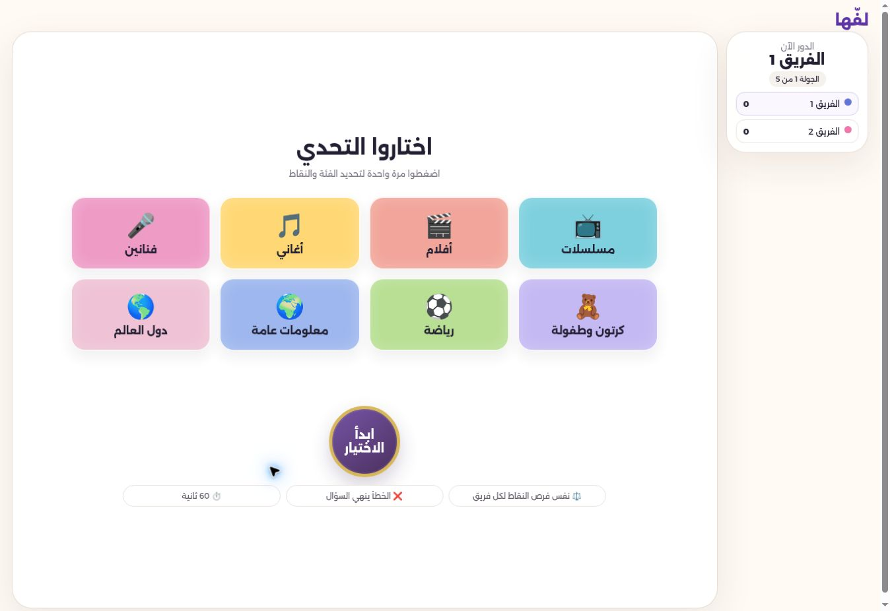
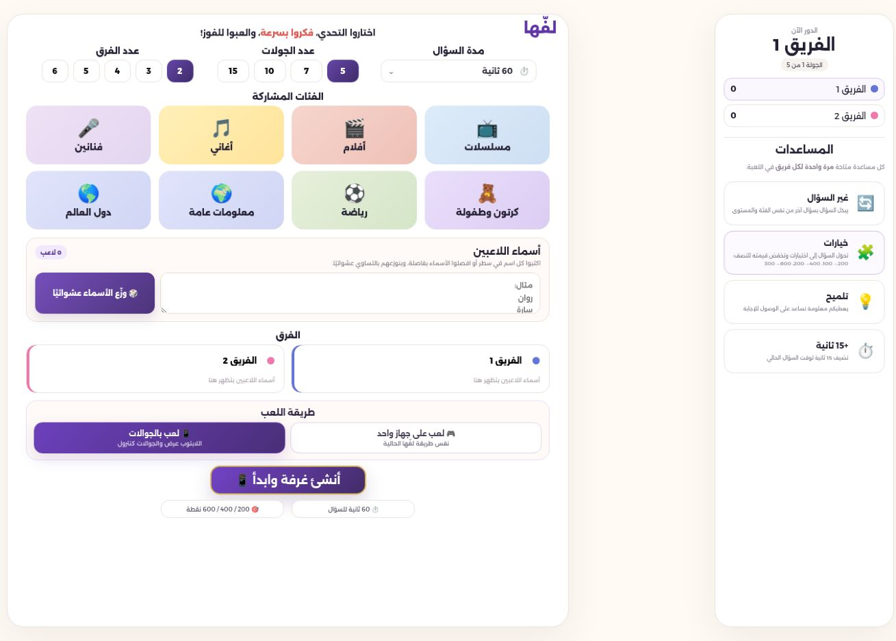
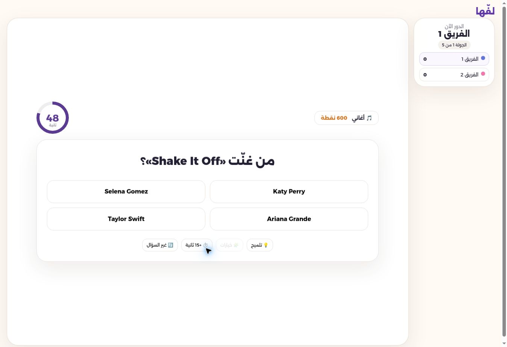

Set up
Choose categories, rounds, and teams. The setup shows the 60-second question time and 200 / 400 / 600 point levels before play begins.
Case study / Game design & development
Laffha is an Arabic quiz game for gatherings. I shaped the idea into a playable web experience where teams can set up a session, pick a challenge, answer from a phone, and see the score unfold.

01 / Context
Group games work best when people can understand the next move without a long explanation. Laffha began with that need: an Arabic experience that makes the rules, turn, question, time, and score easy to follow in a lively room.
The current game is designed around teams. A host starts the session, while players can join and use their phones as controllers. The browser version also includes an individual play entry; this study focuses on the group journey.
02 / Role
I defined the game direction and the experience I wanted players to have, worked through the interface and Arabic content, built and iterated on the web project with coding assistance, and tested problems as they appeared. This is a hands-on product and design project; I do not claim to have personally written every line of its code.
The repository contains the frontend, question bank tooling, multiplayer logic, and QA checks. My work included choosing what needed to feel simple for players, reviewing the running game, and refining behavior when the experience broke down.
03 / The experience
Choose categories, rounds, and teams. The setup shows the 60-second question time and 200 / 400 / 600 point levels before play begins.
A category and point value are drawn for the active team. The game keeps the current turn and scoreboard visible.
The question appears with a timer. A team can answer through its phone controller and use available assistance such as a hint or extra time.
The answer is checked, feedback reaches the answering team, points update, and the session moves to the next turn and eventual winner.
From the live game


04 / Design choices
The interface uses Arabic and right-to-left layout throughout the core play screens, so the game reads naturally to its audience.
The question shows a 60-second timer and its point value. The scoreboard and active team give everyone shared context.
The host display and team phones serve different jobs. Mobile controls let the active team select and confirm an answer without crowding the shared screen.
The point deck distributes 200, 400, and 600 point chances across teams. An assistance option that converts a question into choices lowers its value.
05 / Iteration
One multiplayer issue made a selected answer disappear when duplicate live updates redrew the phone screen. The controller now preserves a choice for the same question and clears it when the game actually advances. Another issue could show result feedback to the wrong team after the turn changed; the result now carries the answering team's identity.
These changes matter because a lost selection or misplaced result makes players doubt the game. The repository includes targeted QA scenarios for answer persistence, feedback ownership, point distribution, and mobile assistance. The technical report still recommends a final regression with separate physical phones.
06 / Where it stands
Laffha is published as a browser game with a team setup flow, Arabic questions, phone controllers, timer, scoring, assistance, and a result screen. This case study does not use unverified player counts or claim measured business impact.
The main lesson for me is that a multiplayer experience is only as clear as its state changes. Designing the screen was one part of the work; keeping selection, feedback, and turn ownership understandable took repeated testing and iteration.
I want to keep improving question quality and test full sessions on separate devices. A mode where every player answers independently can be explored later; it is not presented here as part of the team experience.
Explore further